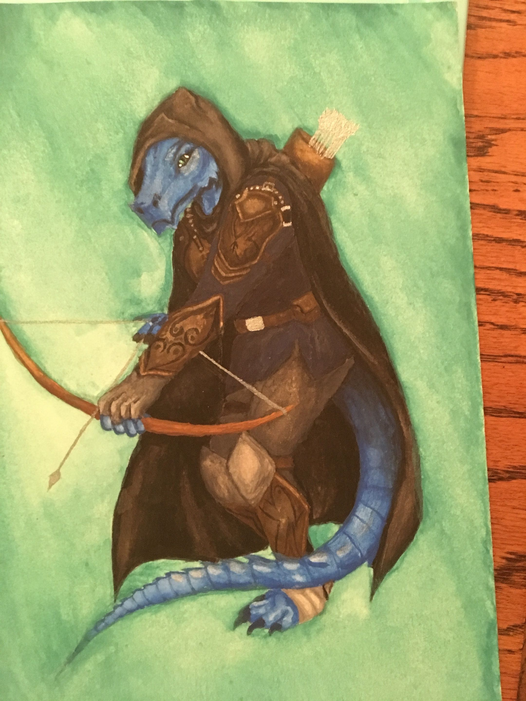

Watercolor Art

Watercolor is much more transparent than other forms of paint, like acrylic, but this allows for a softer look that relies on the paper’s color to help push the pigment into a vibrant finish. With the implementation of water, the paint sometimes flows in unexpected ways, which creates a small learning curve. There are different forms of watercolor you can use, such as pan watercolor, which consists of solid pieces of paint that activate with water; tube watercolor, which is soft and extremely pigmented and needs to be watered down for lighter effects; liquid watercolor, which comes in bottles; and watercolor pencils and markers, which can be drawn on and then activated with water. I prefer the pan form because it doesn’t create much of a mess when accidents happen, and it’s easy to move around so I can work on the go. This medium is perfect for people who want to start with something simple because you don’t need many extra materials, and it allows for layers to be built up to achieve the perfect look. You do have to take time to let it dry if you want to layer your work, but a quick overhead fan helps speed up the process.
Techniques
- Wet-on-wet
- Wet-on-dry
- Salt texture
- Gradient washes